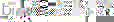
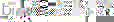
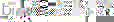

Muscat - the open source search engine
 

Muscat - the open source search engine |

|
Note that Muscat is currently only available in versions targeted for UNIX systems.
Nightly snapshots are available via http://open.muscat.com/open/developer/download/index.html
Snapshots of two different pieces of code are available: one will be named
om-<versionnumber>-<date>.tar.gz and contains the
core code for the Muscat search engine. The other will be named
om-examples-<versionnumber>-<date>.tar.gz and
contains various example applications using Muscat.
You should retrieve the latest snapshot pair available; note that if you wish to build the examples you should make sure that both snapshots have the same date. The snapshots are only released if they compile: thus absence of an example snapshot probably means that recent changes in the core code have broken the example snapshots.
tar zxvf om-<versionnumber>-<date>.tar.gz
tar zxvf om-examples-<versionnumber>-<date>.tar.gz
These commands should unpack the archives into separate subdirectories
("om" and "examples").
These tools generate a configure script for each of the archives, which you should run to set up the code for compilation.
A typical build would be done using the commands:
cd om
./configure
make
make install
Various options may be given to the configure script: see the installation
documentation within the archive for more details.
By default, muscat will be installed in directories under
/usr/local. This can be altered using the --prefix option
to configure.
cd om-examples
./configure
make
Note that we do not currently recommend attempting to install the
examples.
configure should automatically find the installed muscat
library: if it doesn't you may need to specify the path to the
libomus-config script, by using the
--with-libomus-config option to configure.
If you do not have an installed version of muscat, you you must pass parameters to configure to specify where to find Muscat, as follows:
--with-libomus-uninst parameter specifies an (absolute) path
where the Muscat code can be found.
--with-libomus-uninst-exec specifies an
(absolute) path where a built Muscat library can be found (this defaults to
the value of --with-libomus-uninst).
Supposing you had unpacked both om and om-examples in the same directory, you could use:
cd om-examples
./configure --with-libomus-uninst=`pwd`/../om
make
Check the documentation within the examples archive for more details on building and running the examples.
The other drawback of CVS is that you will need to generate your own configure script and makefiles. This can be done using the GNU autoconf and automake packages: you must have these installed if you wish to work from CVS.
We provide a useful script (buildall) to run all the necessary
scripts to generate the project Makefiles. Simply run ./buildall
to run all the neccessary scripts, run configure, and then run make.
Any parameters you wish to pass to configure may be supplied to buildall.
Run ./buildall --help for more details.